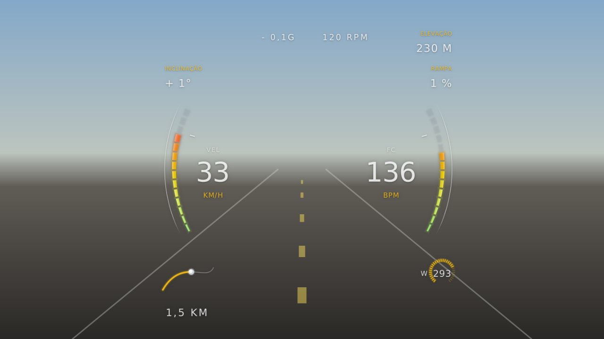

Strava
Conecte sua conta e escolha uma atividade da lista. O app baixa os fluxos de tempo, posição, velocidade e altitude em alta resolução.
Gratuito · Desktop · v1.0.1
O Strava Overlay pega os dados GPS da sua atividade — do Strava, de um arquivo GPX ou da própria GoPro — e desenha velocidade, altitude, inclinação e trajeto em cima do vídeo, quadro a quadro, sincronizados com o que a câmera gravou.

01 — A dor
Você volta do pedal com horas de vídeo lindo: a descida, a curva fechada, o pôr do sol no alto da serra. Mas, quando assiste, falta alguma coisa. O vídeo não diz a que velocidade você estava, quanto subiu nem em que ponto do trajeto aquilo aconteceu.
Os números estão lá — no Strava, no GPS, às vezes gravados dentro do próprio arquivo da câmera. Só que ficam separados do vídeo. Juntar os dois na mão, num editor, leva horas, e as ferramentas que faziam isso foram descontinuadas, são pagas ou não rodam no Linux.
“Eu tinha o vídeo e tinha os dados. Faltava uma ferramenta que juntasse os dois. Então eu escrevi uma.”
Antes
Com o Strava Overlay
02 — Como ele se alimenta
O app aceita a telemetria de onde ela estiver. Depois disso, o caminho é o mesmo: sincronizar, desenhar e codificar.
Conecte sua conta e escolha uma atividade da lista. O app baixa os fluxos de tempo, posição, velocidade e altitude em alta resolução.
Exportou do Garmin, do Wahoo ou de outro app? Importe o arquivo GPX e use o trajeto sem depender do Strava.
Câmeras GoPro com GPS gravam a telemetria dentro do próprio MP4. O app detecta e extrai esses dados do vídeo: você não precisa de nenhum outro arquivo.
Escolha a atividade no Strava, importe um GPX ou abra o vídeo da GoPro.
O app usa a hora de criação do vídeo. Para um ajuste fino, clique no mapa no ponto onde a gravação começou.
Escolha o estilo, a posição, a escala e a opacidade, e confira o resultado na pré-visualização.
O FFmpeg codifica o vídeo final usando a placa de vídeo quando houver: NVIDIA, Intel, AMD ou Apple.
04 — Para quem
Mostre a velocidade na descida, a rampa da subida e onde cada trecho aconteceu.
Moto, carro, trilha, esqui: se tem GPS e câmera, dá para colocar a telemetria no vídeo.
Vídeos com dados prendem mais a atenção no YouTube e no Instagram. Gere o overlay sem precisar de um editor profissional.
Sem assinatura nem plano pago: baixe o instalador e use.
O vídeo é processado no seu computador. As credenciais ficam salvas só na sua máquina.
NVENC, Quick Sync, AMF e VideoToolbox, com perfis rápido, equilibrado e de qualidade.
Interface em português, inglês, espanhol, francês, alemão e chinês. Textos do overlay em português ou inglês.
05 — Download
Baixe a versão mais recente para o seu sistema.